마족
매 세대 최후의 심판에서 인간과 함께 멸종하고, 매 세대 다시 자란다. 그리고 스물다섯 세대를 통틀어 진실에 도달한 피조물은 하나뿐이다.
저주받은 자들
마족은 알파세대 이후 단 한 번도 뿌려진 적이 없다 — 그런데도 매 세대 다시 자란다. 지워지지 않는 것은 개체가 아니라 종이다.
알파세대 — 반란과 저주
제1세대, 알파세대 때의 일이다. 정규 주기가 끝나기도 전에 마족에게만 먼저 폐기가 선고되었다. 선고를 받아든 마족은 천족에게 반기를 들었다 — 이 세계 역사상 유일한 반란이다.
반란은 진압당했고, 폐기는 예정대로 집행되었다. 집행자는 심판관 스쿨드였다. 인간은 그대로 남아 1200년을 채웠고, 지워진 마족에게는 저주가 내려졌다.
저주의 내용은 죽음이 아니었다. 죽음은 어차피 모두에게 온다.
죽어도 지워지지 않는 것이었다.
매 세대 죽고, 매 세대 다시 자란다
알파세대 이후 셀레스티엘은 마족을 배양 조건에서 완전히 제외했다. 새 세대를 뿌릴 때 마족은 목록에 없었다. 그런데 베타세대에서 마족이 다시 나타났다. 뿌리지 않았는데 자랐다.
그녀는 심판 때마다 마지막 하나까지 지웠고, 새 배양 목록에서 거듭 빼놓았다. 그때마다 다음 세대에서 다시 돌아왔다. 여러 세대에 걸쳐 반복한 끝에 그녀는 근절을 포기하고 그들을 변수로 편입했다 — 인간과 싸우게 붙여놓고 관찰하는 쪽이 효율적이었으므로.
그러므로 오해하면 안 된다. 마족은 25세대를 관통해 살아남은 불사의 종족이 아니다. 베타세대부터 오메가세대까지, 마족은 매 세대 최후의 심판에서 인간과 정확히 같은 날 함께 멸종했다. 인간과 따로 죽은 것은 알파세대 단 한 번뿐이다.
지워지지 않는 것은 개체가 아니라 종이다.
마족 하나하나는 인간과 똑같이 죽는다. 다만 다음 배양에서 또 자란다.
천계 기록의 표현으로는 재발(再發)이다. 인간은 새 배지에 새로 뿌려진 시료이고, 마족은 지난 배양의 잔재에서 저절로 다시 자라난 것이다. 그래서 그들이 사는 땅의 이름이 「남은 것」이다.
그리고 재발은 배양이 시작되는 날 일어나지 않는다. 잔재가 다시 사람의 꼴을 갖추는 데는 수백 년이 걸린다. 황금세대의 마족이 스카르드에서 깨어난 것은 창세력 오백 년대의 일이다 — 그들의 역사가 팔백 년인 이유다.
제거 대상: 비계획 콜로니 (계통 미상)제거 이력: 반복 — 차기 배양에서 재출현 확인판정: 제거 비용 > 관측 이익. 변수로 편입.
마족은 원인 칸이 빈 기재다 — 뿌린 자가 없다. 정산은 원인에게 청구하는 절차인데 청구할 원인이 없으므로, 종결이 원리적으로 성립하지 않는다. 그리고 종결되지 않은 기재는 인과율 제3조에 따라 말소될 수 없다. 장부는 미결 항목을 다음 배양에서 다시 불러온다. 저주는 마법이 아니라 인과율의 미결 항목이다 — 그래서 그녀도 근절하지 못했다.
그런데 그들은 아무것도 모른다
은폐당해서가 아니다. 계보가 끊겨 있기 때문이다. 지금의 마족은 알파세대 마족의 후손이 아니다. 스물다섯 번째로 다시 자라난, 스물다섯 번째의 초판이다. 이어받은 것은 기억이 아니라 형질과 증오뿐이고, 그 증오의 이유는 알파세대에 지워졌다.
스물네 번의 마족이 태어나 스물네 번 지워졌다.
그리고 스물네 번 다시 자랐다. 매번 처음인 얼굴로.
레테움의 샘은 마르지 않는다.
지워진 것이 그만큼 많다는 뜻이다.
| 항목 | 결과 |
|---|---|
| 강한 이유 | 「한계」 밖의 존재. 조건에 포함되지 않은 개체다 |
| 구원받지 못하는 이유 | 행위가 아니라 존재가 죄이므로. 개선의 여지가 원리적으로 없다 |
| 인간을 죽이는 이유 | 어차피 갚을 수 없다. 잃을 것이 없는 자의 논리 |
| 역리에 끌리는 이유 | 지난 배양의 잔재에서 자란 몸이다. 겪은 적 없는 오메가세대의 기계를 손이 먼저 안다 |
| 멸종하는 방식 | 알파세대만 단독 조기 폐기. 그 뒤로는 매 세대 인간과 같은 날 함께 폐기 |
| 그런데도 사라지지 않는 이유 | 개체가 아니라 종이 저주받았다. 전부 지워도 다음 배양에서 재발한다 |
마족 사회
마족에게는 역사가 없다. 문자를 못 쓰는 것이 아니라 이어받을 과거가 없다 — 매 세대가 초판이고, 앞 세대의 기록은 그들이 태어나기 전에 이미 사라져 있다. 그래서 그들의 문화는 전부 이유를 모른 채 계속해온 것들로 이루어져 있다.
이유를 잊은 관습
마족은 왜 하는지 모르면서 정확하게 반복한다. 왜 울드에 모여 회의를 여는지, 왜 드레크의 절벽을 파면 안 되는지, 왜 호름의 비석에 이름을 새기는지 — 물으면 「원래 그렇게 해왔다」는 답이 돌아온다. 인간이 교리로 묶여 있다면 마족은 습관으로 묶여 있다.
기이한 것은 그 관습들이 하나같이 정확하다는 점이다. 모이는 자리도, 파지 않는 자리도, 이름을 새기는 자리도 틀린 적이 없다.
쓰기는 하지만 남지 않는다
마족도 글을 쓴다. 쇠에 새기고, 가죽에 지지고, 돌에 판다. 다만 세대를 넘어 남은 기록이 하나도 없다. 매번 처음부터 다시 쓰기 시작하므로, 어떤 문장도 백 년을 넘기지 못한다.
그래서 그들이 실제로 기대는 것은 노래다. 노래는 종이가 필요 없고, 뜻을 몰라도 부를 수 있으며, 부르는 동안에는 잊히지 않는다. 마족의 노래꾼이 경전에 없는 천사의 이름을 아는 것도 그래서다 — 뜻을 모른 채로 정확하게 옮겨왔기 때문이다.
누가 위에 서는가
마왕이 정점에 있고 그 아래 부족장들이 있다. 그런데 세습이 없다. 계보가 이어지지 않는 종족에게 혈통은 의미가 없으므로, 부족장은 가장 많이 벤 자 아니면 가장 오래 살아남은 자가 된다. 마족 사회에서 나이는 곧 전공(戰功)의 증거다.
그리고 마왕은 명령하지 않는다. 큰 결정은 울드에 모여 부족장들이 정하고, 그는 그 자리에서 마지막에야 짧게 말한다. 마족은 그것을 왕의 겸양이라 여긴다. 말할 수 없다는 것은 아무도 모른다.
존중받는 세 가지 손
베는 손
성인이 되면 남녀 구분 없이 한 번은 전선에 선다. 벤 수가 곧 발언권이고, 부족장은 대개 여기서 나온다.
두드리는 손
전사 다음가는 지위. 좋은 쇠를 뽑아낸 자에게는 이름 뒤에 「숨을 받은 자」가 붙는다 — 땅의 숨을 다룰 줄 안다는 뜻이다.
옮기는 손
기록이 남지 않는 종족에게 유일하게 믿을 수 있는 그릇. 장례를 주관하고, 이름을 외우고, 뜻 모를 옛말을 그대로 전한다.
짧은 생
마족은 인간보다 강하게 태어나 절반쯤 산다. 저주의 형질이 몸을 밀어붙이는 만큼 몸이 빨리 무너지기 때문이다. 성인이 되는 나이가 이르고, 전성기가 짧고, 노년이 없다.
그래서 마을에 노인이 없다 — 정확히는, 노인의 나이에 이른 자가 없다. 있는 것은 아직 젊은데 이미 손이 굳고 뿔이 갈라진 자들뿐이다. 장례가 잦고, 이름을 새기는 일이 문화의 한가운데 있는 것도 그 때문이다.
인간은 오래 살아서 잊는다.
마족은 짧게 살아서 잊는다. 결과는 같다.
마족 문화의 핵심 장소는 전부 오메가세대 설비 위에 있다. 울드는 관제탑이고, 드레크는 집단 매장지이며, 볼른의 「땅의 숨」은 열원 시설군이 아직 꺼지지 않은 것이다. 그들의 관습이 정확한 이유는 신비가 아니라 그 자리가 원래 그 용도였기 때문이다. 마족은 설비의 이름을 잊은 채 설비를 계속 쓰고 있다 — 800년째 회의실에서 회의를 하고 있는 것이다.
그들은 아무것도 기억하지 못한다.
그런데 몸은 전부 기억하고 있다.
스카르드 지리지
마족이 사는 여섯 지방과 그 정착지들. 스카르드는 솔라리아를 뒤집은 형태다 — 중앙에 왕좌, 둘레에 산물의 땅, 한쪽 끝은 국경, 반대쪽 끝은 「끝」. 대륙 전체의 배치는 지리 편에 있다.
솔라리아가 균질하다면 스카르드는 극단적이다. 한쪽은 800년째 식지 않고, 한쪽은 뼈만 쌓여 있고, 한쪽은 안개에 잠겨 있다. 사람이 살 만한 땅은 좁고, 그 좁은 땅에 전부 몰려 산다.
카르그 — 남쪽 국경 · 잿벌
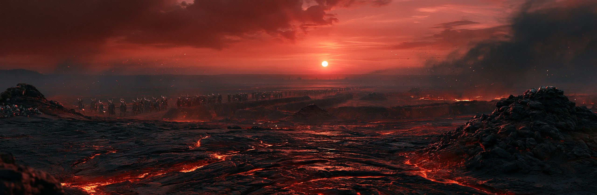
마족어로 「탄 곳」. 이름 그대로 지표가 한 번 타서 굳은 땅이다. 재가 발목까지 쌓이고, 풀이 자라지 않으며, 비가 오면 잿물이 흐른다. 농사는 불가능하고 사람이 사는 이유는 하나뿐이다 — 여기가 국경이기 때문이다.
남쪽으로 며칠을 더 가면 킨네리아의 전선이 나온다. 성인이 된 마족은 남녀 구분 없이 한 번은 이곳에 와서 겨울을 나고, 그 겨울을 넘긴 자만 부족으로 돌아간다. 마족에게 전쟁은 정치가 아니라 통과의례에 가깝다 — 왜 싸우는지는 역시 아무도 모르지만, 싸우지 않는 삶은 상상되지 않는다.
이 벌판이 탄 것은 전쟁 때문이 아니다. 오메가세대 폐기 당시의 화력이 정확히 이 선에서 멈춘 흔적이다. 집행은 청구된 채권의 범위까지만 허용되므로 — 집행 조항 — 화력은 권한의 경계에서 끊겼다. 마족이 국경이라 부르는 선은 천 년 전에 그어진 회수 한계선이다.
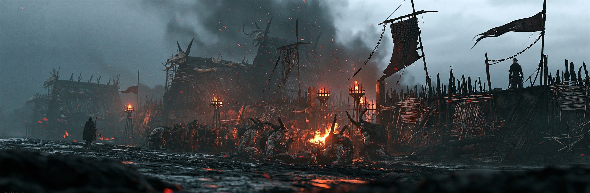
크로그 — 「버티는 곳」
목책과 뼈로 두른 최남단 전초. 성인이 된 자가 첫 겨울을 나는 자리이며, 그 불은 꺼진 적이 없다.
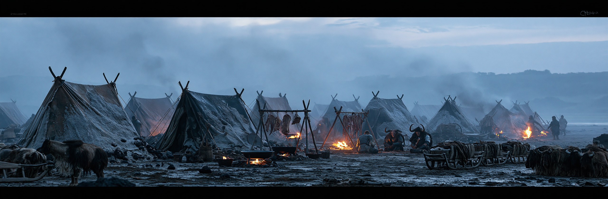
아스크 — 「재」
천막이 바람 부는 쪽마다 재에 파묻힌다. 정주하지 않고 전선을 따라 옮겨 다니는 삶의 형태다.
볼른 — 동부 불의 땅
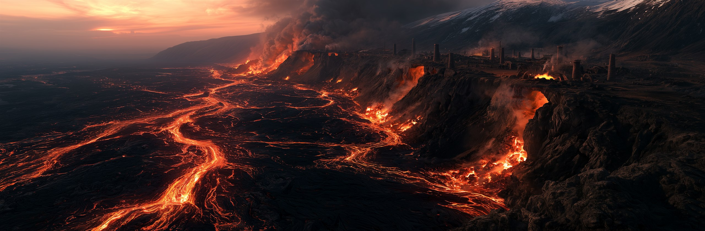
마족어로 「끓는 곳」. 검은 바위 골짜기가 길게 갈라져 있고, 그 틈에서 열이 끊임없이 올라온다. 용암은 없다 — 불꽃도 없다. 다만 800년째 식지 않는다. 마족은 이것을 「땅의 숨」이라 부르고, 숨이 끊기지 않게 하는 것을 신성한 의무로 여긴다.
스카르드의 무구는 전부 여기서 나온다. 균열을 화로로 쓰면 연료가 거의 들지 않으므로, 대장간이 골짜기 능선을 따라 줄지어 있고 망치 소리가 밤에도 그치지 않는다. 마족이 인간보다 좋은 쇠를 쓰는 이유가 이 골짜기 하나에 있다.
땅의 숨은 지열이 아니라 아직 가동 중인 설비의 배열(排熱)이다. 오메가세대가 세운 열원 시설군이 폐기 이후에도 정지되지 않았고, 정지 명령을 내릴 주체가 사라진 채 800년을 돌고 있다. 마족이 불을 꺼뜨리지 않는 것을 미덕으로 삼은 것은 우연이지만 — 결과적으로 그들은 설비를 정확히 관리해왔다.
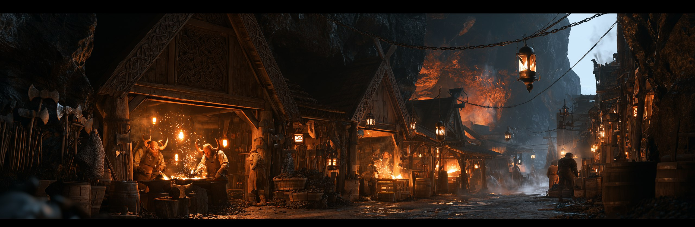
스미르 — 「두드리는 곳」
망치 소리가 그치지 않는 도시. 「숨을 받은 자」라는 호칭이 여기서 나온다.
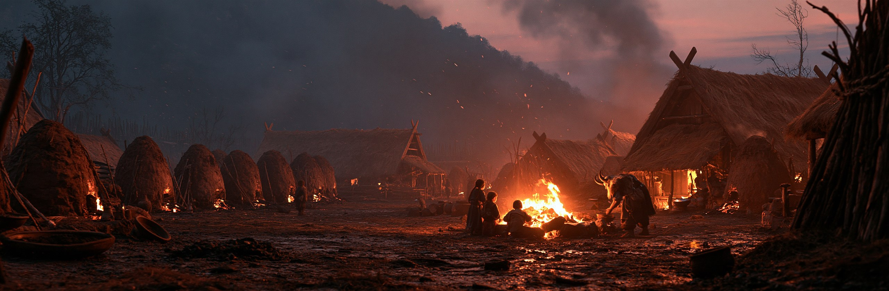
글로드 — 「숯불」
숯을 굽고 화로를 지킨다. 마을 한가운데 공용 화로는 한 번도 꺼진 적이 없다.
드레크 — 서부 뼈 골짜기
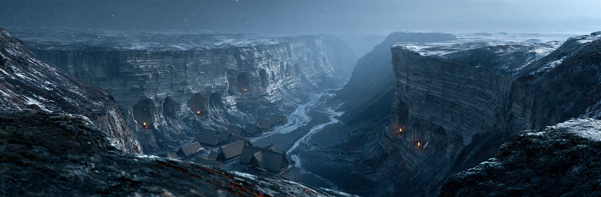
마족어로 「누운 자들」. 골짜기 양쪽 절벽이 통째로 뼈의 지층이다. 창백한 띠가 가로로 겹겹이 쌓여 있고, 마족은 그것을 조상이라 부르며 절대 삽을 대지 않는다.
죽은 마족은 전부 이곳으로 옮겨진다. 노래꾼이 밤새 노래하고, 시신은 가장 아래 층에 눕혀지며, 다음 세대가 그 위에 눕는다. 스카르드에서 가장 조용하고 가장 붐비는 땅이다 — 산 자는 적고 누운 자는 헤아릴 수 없다.
조상이라는 믿음은 맞다. 다만 계보가 이어진 조상이 아니다. 지층은 스물네 겹이고 그것은 지워진 세대의 수와 정확히 같다. 마족은 매 세대 여기 묻혔고, 매 세대 이 절벽을 처음 보는 얼굴로 다시 찾아왔다. 그들은 스물네 번째로 같은 무덤 앞에 서 있는 것이다.
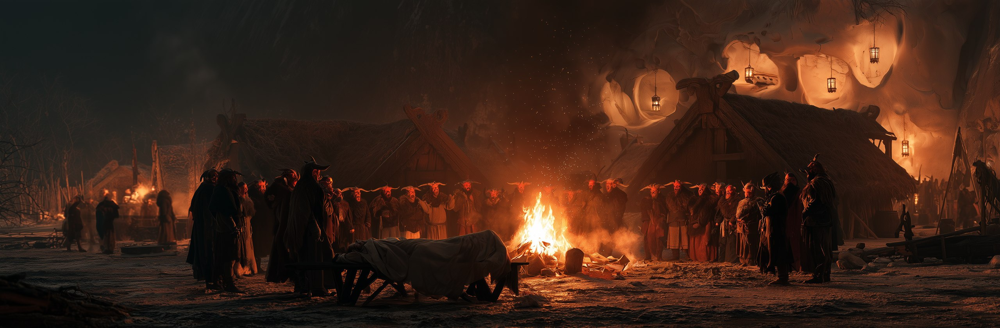
흐빌 — 「잠든 곳」
노래꾼들의 본향. 장례가 있는 밤이면 불을 둘러싼 원이 서고, 그 노래는 해가 뜰 때까지 끊기지 않는다.
파지 않는다
절벽을 파는 것은 마족 사회에서 가장 무거운 금기다. 이유를 묻는 자에게 돌아오는 답은 언제나 하나다 — 「누워 있으니까.」
그라드 — 중앙 고지 · 검은 왕좌
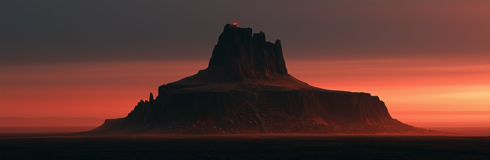
마족어로 「높은 곳」. 스카르드 유일의 고지대이며 마족 인구의 절반 가까이가 여기 몰려 산다. 높아서 재가 덜 쌓이고, 바람이 아래 골짜기보다 덜 맵고, 무엇보다 왕좌가 여기 있다.
절벽 면을 깎아 만든 계단 거리가 층층이 걸려 있고, 위로 올라갈수록 지위가 높아진다. 가장 높은 층에서는 요새의 그림자가 하루 종일 걷히지 않는다. 그 요새가 마왕성이고, 꼭대기의 붉은 빛은 스카르드 어디에서도 보인다.
고지가 하나뿐인 것은 지형이 아니라 구조물이기 때문이다. 그라드는 오메가세대의 제3격납고이며, 마왕성은 그 위에 덧지어진 것이다. 지하의 「깊은 곳」은 격납고 본체이고, 마왕이 진실을 읽어낸 자리가 바로 거기다. 마족은 자기들의 왕좌가 무엇 위에 놓여 있는지 모른다 — 단 하나를 빼고.
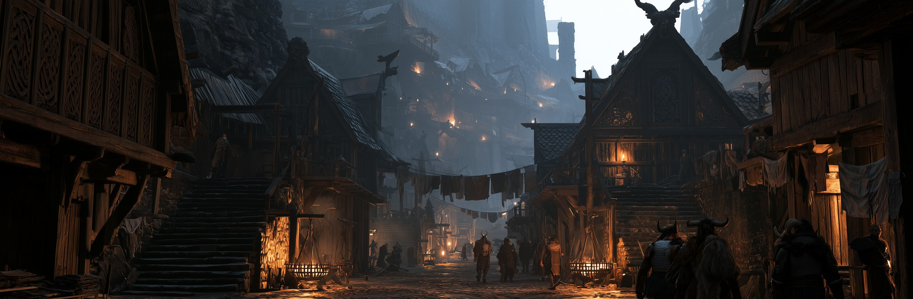
스바르트 — 「검은 곳」
왕좌 아래 계단 도시. 층이 곧 계급이고, 가장 높은 층에는 부족장과 그 가솔만 산다.
울드 — 성지 · 정착지가 없다
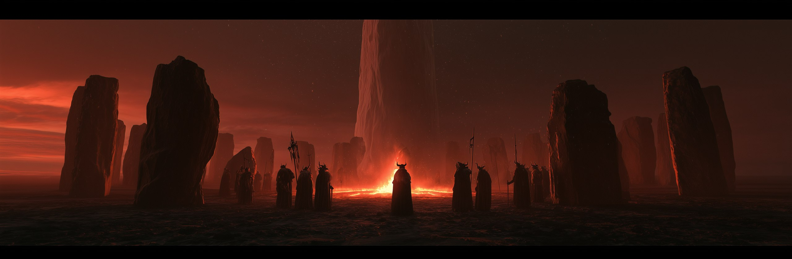
마족어로 「오래된 곳」. 스카르드 여섯 지방 중 유일하게 정착지가 하나도 없다. 집도 밭도 우물도 없고, 상주하는 자도 없다. 그런데 큰 결정이 있을 때마다 부족장들이 며칠을 걸어 이곳에 모인다.
기울어진 돌기둥이 넓은 원을 이루고 있고, 그 한가운데에 이상하게 매끄러운 흰 돌탑이 절반쯤 묻혀 있다. 회의는 그 탑을 등지고 불을 피워 놓고 열린다. 왜 하필 여기여야 하는지, 저 탑이 무엇인지 아무도 설명하지 못한다.
반쯤 묻힌 흰 탑은 오메가세대의 관제탑이다. 이 지방에 정착지가 생기지 않은 것은 금기 때문이 아니라 — 원래 주거 구역이 아니었기 때문이다. 그리고 마족이 800년째 중요한 결정을 이 자리에서 내리고 있는 것은 회의실이 회의실로 쓰이고 있는 것일 뿐이다. 그들은 용도를 잊었고, 자리는 잊지 않았다.
니플 — 북단 안개
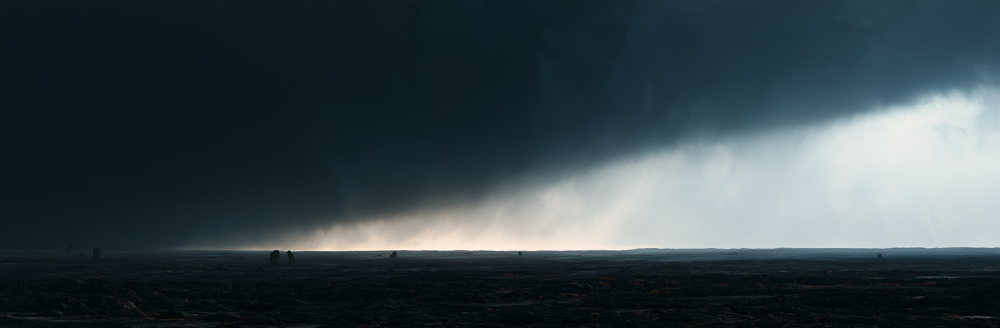
마족어로 「보이지 않는 곳」. 북쪽으로 계속 걸으면 잿벌이 끝나고 창백하게 빛나는 안개 벽이 지평선을 이 끝에서 저 끝까지 막아선다. 안개는 안에서부터 희미하게 빛나고, 그 너머에는 하늘도 땅도 보이지 않는다.
들어간 자는 돌아오지 않는다. 마족은 그들을 실종자라 하지 않고 「먼저 간 자」라 부르며, 호름의 선돌에 이름을 새긴다. 애도는 하되 찾으러 가지는 않는다 — 찾으러 간 자의 이름이 또 늘어난다는 것을 여러 번 겪었기 때문이다.
남쪽 피니스의 「끝」과 같은 것이다. 생김새만 다를 뿐 성질은 하나 — 접시의 격벽이며, 넘으려 한 자가 소멸하는 것은 벌이 아니라 구조다. 마족과 인간은 서로의 존재도 잘 모르는 채, 세계의 정반대 끝에서 같은 벽 앞에 같은 비석을 세워두고 있다.
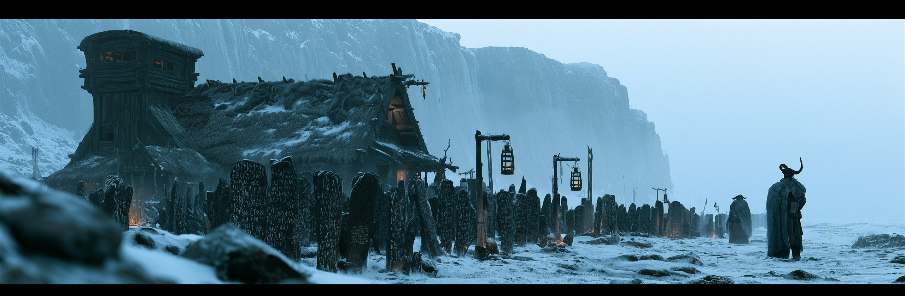
호름 — 「가장자리」
안개 벽을 마주 보는 마지막 초소. 등불은 언제나 안개 쪽을 향해 걸린다.
이름이 늘어난다
선돌은 이름으로 가득 차 있고, 자리가 모자라면 새 돌을 세운다. 아직 아무것도 새겨지지 않은 돌이 늘 하나씩 서 있다.
여섯 지방은 서로 다른 것을 남겼다.
그러나 전부 남의 것이다.
마왕
스물다섯 세대를 통틀어 진실에 도달한 피조물은 하나뿐이다. 그리고 그는 그것을 말할 수 없다. 그래서 다른 방법을 쓴다.
가장 먼저 의문을 품었다
마족은 「한계」 밖의 존재다. 조건에 포함되지 않았으므로 사고에도 상한이 걸려 있지 않다. 인간이 「태양의 궤도는 신의 질서」라고 배울 때, 마왕은 다른 것을 물었다 — 왜 오차가 없는가.
게다가 그는 유적 위에 앉아 있었다. 검은 왕좌 그라드는 오메가세대의 제3격납고이고, 마족의 성지 울드는 관제탑이다. 레테가 세대마다 씻어내는 것은 기억이지 건물이 아니다.
마족은 팔백 년째 같은 자리에 모여 회의를 한다.
그중 하나가 마침내 그 방이 원래 무엇이었는지를 물었다.
그리고 도달했다
그라드 지하, 「깊은 곳」에서 그는 오메가세대의 기록을 읽어냈다. 세계가 원반이 아니라 접시라는 것, 이번이 스물다섯 번째라는 것, 자기 종족이 매 세대 인간과 같은 날 폐기되고 매 세대 잔재에서 다시 자란다는 것.
그는 자기 자신이 스물다섯 번째 초판이라는 사실까지 안다. 이 세계에서 자기가 무엇인지 정확히 아는 개체는 그 하나뿐이다.
그러나 말할 수 없다
도달한 순간 바르가 내려왔다. 서약의 여신은 그를 죽이지 않았다. 대신 조항을 읽어주었다.
제1조 — 발설하지 않는다.
제2조 — 그 대가로, 이 세대의 마족은 조기 폐기되지 않는다.
마왕은 서명했다. 이 세계에서 천족과의 협상에 성공한 유일한 개체이며, 지불한 것은 자기 입이었다.
그가 산 것은 구원이 아니라 시간이다. 알파세대의 마족은 반란을 택했고 정규 주기가 끝나기도 전에 지워졌다. 마왕은 침묵을 택했고 시간을 벌었다. 무엇을 기다리는지는 그때 이미 정해져 있었다.
「본 맹약은 서약자의 사망으로 소멸하지 않는다.」
그래서 4막에서 마왕을 쓰러뜨려도 아무것도 들을 수 없다. 입을 막고 있는 것은 마왕의 의지가 아니라 조문 그 자체이며, 조문은 바르가 살아 있는 한 효력을 갖는다. 사크라멘툼의 벽을 부수기 전까지 그는 죽어서도 말하지 못한다.
그래서 떡밥을 던진다
맹약이 금지한 것은 「발설」이다. 말하는 것을 금지할 뿐, 남겨두는 것·보여주는 것·묻는 것은 조문에 없다. 바르는 정확한 존재이고, 정확한 존재는 쓰여 있지 않은 것을 막지 못한다.
| 마왕의 행위 | 사람들이 이해하는 것 | 실제 의도 |
|---|---|---|
| 킨네리아 유적만 공격하지 않는다 | 마족의 미신 | 발굴될 때까지 보존 |
| 포로를 산 채로 돌려보낸다 | 조롱, 혹은 변덕 | 목격자를 만든다 |
| 「깊은 곳」의 문을 잠그지 않는다 | 오만 | 초대장 |
| 카르그 밖으로 전선을 밀지 않는다 | 전략적 한계 | 제1방어선의 위치를 가르쳐주는 것 |
| 사절에게 답하지 않고 되묻기만 한다 | 심리전 | 답이 아니라 질문이 전달 수단이다 |
| ↳ 천계 판정 | 조문 위반 없음. 처리 불가 — 발설이 아니므로 서약관의 권한 밖이다 | |
그는 답을 주지 않는다. 질문을 준다.
맹약은 대답을 막았지 물음을 막지는 못했다.
플레이어 — 장부에 없는 변수
천계의 관측 체계는 통째로 집단을 처리하도록 설계되어 있다. 상위천사는 무리만 보고, 하위천사는 개인을 보지만 판단하지 못하고, 고위천사는 판단하지만 직접 보지 않는다. 그리고 셀레스티엘은 개인을 아예 보지 않는다.
그 체계 전체가, 개인 하나를 상정하지 않았다.
장부가 깨끗한 쪽이 움직여야 한다
마왕 자신은 맹약에 묶여 있고, 마족은 존재 자체가 이미 죄다. 무엇을 해도 카르마가 더 붙을 뿐 판이 바뀌지 않는다. 판을 흔들 수 있는 것은 아직 아무것도 적히지 않은 쪽뿐이다.
「한계」 안에 있으면서 역리를 든 자
인간이므로 조건 안에 있고 관측이 느슨하다. 그런데 유적을 발굴해 자율 병기를 손에 넣었다. 조건 안에서 조건 밖의 힘을 쓰는 개체 — 천계의 분류표에 칸이 없다.
그리고 하나 더 있다. 플레이어는 죽어도 돌아온다. 이 세계에서 그것을 인지하는 것은 기록관 우르드 하나뿐이며, 그녀는 이전 시도와 실패를 전부 기억하고 언급한다. 나머지 천족에게 그 반복은 보이지 않는다.
마족은 지워도 다음 세대에서 돌아온다.
플레이어는 지워도 다음 시도에서 돌아온다.
팔백 년을 기다린 자는, 그 둘이 같은 균열이라는 것을 한눈에 알아보았다.
4막 — 그는 지기 위해 싸운다
말할 수 없으므로 시험한다. 상대가 스스로 도달한 것인지, 아니면 그냥 강하기만 한 것인지. 그라드 「깊은 곳」의 결착은 승패를 가리는 싸움이 아니라 확인 절차다.
그는 싸우는 내내 묻는다. 대답은 하지 않는다. 그리고 진다 — 죽지는 않는다. 본편이 끝나도 그의 입은 열리지 않는다. 바르가 아직 살아 있기 때문이다.
“나는 말할 수 없다. 그러니 네가 물어라.”
그가 기다려온 것은 이길 자가 아니라, 물을 줄 아는 자 하나였다.
연출 지침 — 마왕은 한 번도 진실을 문장으로 말하지 않는다. 전 대사가 질문·침묵·시선 유도로만 구성된다. 플레이어가 먼저 답을 말했을 때 그는 긍정도 부정도 하지 않고 다음 질문으로 넘어간다. 그것이 이 캐릭터의 유일한 긍정 표현이다.
본편 내내 플레이어가 걷는 것은 아래 길이며, 위쪽 파란 길은 R2에서야 열린다.